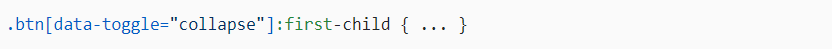

ТЕОРІЯ: Групування
Для задання правил одразу кільком селекторам одночасно їх треба перерахувати через кому.
[ Синтаксис: селектор1, селектор2, ... ]
Комбінування
В CSS селектори можна комбінувати. Це зробити просто, завдяки їх послідовному запису без використання пробілу.
Приклад селектора для вибору елементів, що мають одночасно два класи:
Прикладом селектора для вибору елементів, що мають вказаний клас, атрибут, тає першим дочірним елементом в своєму батьківському:
